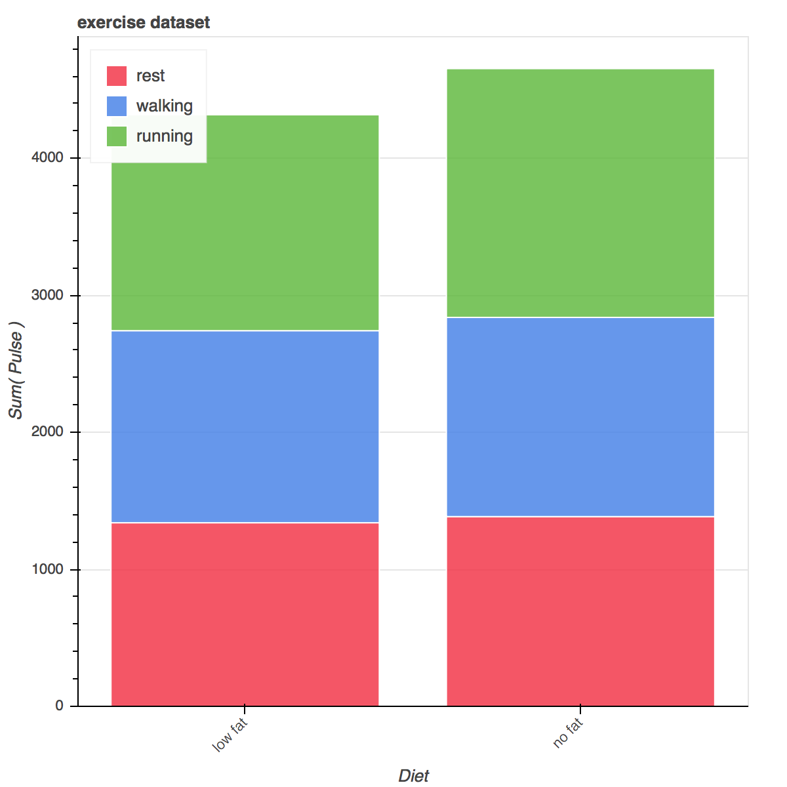

http://bokeh.pydata.org/en/latest
Bokeh
是一个专门针对Web浏览器的呈现功能的交互式可视化Python库。这是Bokeh与其它可视化库最核心的区别。
专门针对Web浏览器的交互式、可视化Python绘图库
可以做出像D3.js简洁漂亮的交互可视化效果，但是使用难度低于D3.js。
独立的HTML文档或服务端程序
可以处理大量、动态或数据流
支持Python (或Scala, R, Julia…)
不需要使用Javascript
Bokeh接口
Charts: 高层接口，以简单的方式绘制复杂的统计图
Plotting: 中层接口，用于组装图形元素
Models: 底层接口，为开发者提供了最大的灵活性
包引用
from bokeh.io import output_notebook, output_file, show
from bokeh.charts import Scatter, Bar, BoxPlot, Chord
from bokeh.layouts import row
import seaborn as sns
# 导入数据
exercise = sns.load_dataset('exercise')
output_notebook()
#output_file('test.html')
from bokeh.io import output_file生成.html文档from boken.io import output_notebook在jupyter中使用
bokeh.charts
http://bokeh.pydata.org/en/latest/docs/reference/charts.html
散点图 Scatter
示例代码：
# 散点图
p = Scatter(data=exercise, x='id', y='pulse', title='exercise dataset')
show(p)
运行结果：
柱状图 Bar
示例代码：
# 柱状图
p = Bar(data=exercise, values='pulse', label='diet', stack='kind', title='exercise dataset')
show(p)
运行结果：

盒子图 BoxPlot
示例代码：
# 盒子图
box1 = BoxPlot(data=exercise, values='pulse', label='diet', color='diet', title='exercise dataset')
box2 = BoxPlot(data=exercise, values='pulse', label='diet', stack='kind', color='kind', title='exercise dataset')
show(row(box1, box2))
运行结果：
弦图 Chord
• 展示多个节点之间的联系
• 连线的粗细代表权重
示例代码：
# 弦图 Chord
chord1 = Chord(data=exercise, source="id", target="kind")
chord2 = Chord(data=exercise, source="id", target="kind", value="pulse")
show(row(chord1, chord2))
运行结果：
bokeh.plotting
方框 square, 圆形 circle
示例代码：
from bokeh.plotting import figure
import numpy as np
p = figure(plot_width=400, plot_height=400)
# 方框
p.square(np.random.randint(1,10,5), np.random.randint(1,10,5), size=20, color="navy")
# 圆形
p.circle(np.random.randint(1,10,5), np.random.randint(1,10,5), size=10, color="green")
show(p)
运行结果：
更多图形元素参考：http://bokeh.pydata.org/en/latest/docs/reference/plotting.html